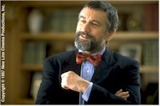

Courage Rewarded
Awards and Notes from the 1998 Berlin
International Film Festival
Perhaps taking inspiration from the title of this year's Children's Film Festival – "Courage to Act" – the International Jury of the flagship Competition section of the 48th Berlin International Film Festival seemed to directly refute claims that the whole thing's gone irreparably mainstream and commercial by awarding the event's top prize, the Golden Berlin Bear, to the warmly-received but decidedly more artistically adventurous Brazilian-French entry Central do Brasil (Central Station) – which, fittingly, features a captivating performance by an 11-year-old newcomer who won the part over a reported 1,500 other aspirants.
The emotional if somewhat aloof saga of a young street urchin (Vinicius de Oliveira) saved from a grubby fate at the eponymous railway terminus by a grouchy old woman (leading Brazilian actress Fernanda Montenegro), this new film from documentarian-turned-storyteller Walter Salles had just won the Sundance Festival's "Cinema 100" prize for it's script before being unveiled to European journalists and the public on Valentine's Day (Sony Pictures Classics will distribute in the USA later this year).
The prizes, announced on the closing day (22 February) of the Berlinale, cap what at least one seasoned trade journalist described as the best competition lineup in recent memory. Elsewhere in the six additional major sections, attendance seemed spotty but reviews were generally good. While schemes such as the festival's announcement that public tickets were to be made available to unemployed Berliners (about 20 per cent of the population at the moment) at half price, cynical observers wondered whether that wasn't just a ploy to fill cinemas. At any rate, by Friday (20 February) 500 people had taken them up on their offer.

In other awards news, the runner-up Silver Bear Special Jury Prize went to Barry Levinson's Wag the Dog, which provided a thinly-veiled opportunity for Robert De Niro (repped also in competition with Great Expectations and Jackie Brown – a trio that represent his most recent face hair movies) to appear at a rare press conference to give his side of that recent dust-up with French police. And while it was great to see snippets of a festival press conference running on American news programs, it's a shame it had to be oriented towards the tabloid aspect of the story and not the film's terrific reception in Europe.Neil Jordan picked up the Silver Bear for Best Director on the strength of The Butcher Boy (USA-Ireland), the harrowing but often comical story of an increasingly nasty young boy in 1960s Ireland based on the popular 1992 novel. It is slated to open stateside 3 April.
Finding a vindication of sorts for the shocking snub of this year's Oscar nominations, Samuel L. Jackson won the Silver Berlin Bear for Best Actor for Jackie Brown, while Fernanda Montenegro's performance as the bitter Dora in Central Station garnered her the Best Actress Bear (making it the only film to win two prominent awards).
Citing his "lifetime contribution to the art of cinema" – an unassailable fact – the jury awarded a discretionary Silver Berlin Bear to Alain Resnais for the French production On connait la chanson (Same Old Song). Honoring a rather less seasoned industry presence, Matt Damon received a Silver Berlin Bear for Outstanding Single Achievement as co-scriptwriter and lead actor for Good Will Hunting (USA).
The DM 50,000 (approximately $28,000) European Academy of Film and Television "Blue Angel" prize was awarded to actor-turned-director Jeroen Krabbe for his interesting but ultimately unbalanced drama Left Luggage (The Netherlands-Belgium-United Kingdom). For opening "new horizons in filmmaking," the Alfred Bauer Prize – named for the festival's founder – was awarded to Stanley Kwan's gay themed Hong Kong drama Yue Kuai le, yue duo luo (Hold You Tight).
Three additional Bears – dubbed Special Mentions – were awarded for individual achievement: Isabella Rossellini for the Hassidic Mrs. Kalman in Left Luggage (quite a good performance, actually); fifteen-year-old Eammonn Owens as the troubled young Francie Brady in Neil Jordan's The Butcher Boy ("It's grand fun makin' a film" he recently told "Entertainment Weekly"); and cinematographer Slawomir Idsziak for his lensing of Michael Winterbottom's I Want You (United Kingdom). Short films honored include the Dutch I Move So I Am and Nicaragua's Cinema Alcazar.
The International Jury wasn't the only body hard at work judging films at the festival, only the one with the highest profile. Hold You Tight won the Teddy, awarded by a Berlin-based gay and lesbian alliance (reportedly, they always have the wildest awards ceremonies), while FIPRESCI, the international critics organization, awarded prizes to the Japanese competition film Sada, Amos Kollek's surprising crowd-pleaser Sue in the Panorama, the six-hour Forum epic from Israel entitled Fragments + Jerusalem, and a special mention to the Russian film In That Land (which also won something called the Peace Film Prize). And Central Station also won an Ecumenical Jury Prize (awarded by the international film organizations of the Protestant and Catholic Churches "to directors who have displayed genuine artistic talent and succeeded in portraying actions or human experiences that comply with the Gospels or sensitize viewers to spiritual, human or social values"), along with Sue and a Taiwanese film called Homesick Eyes.
On the administrative side of festival operations, the various offices that coordinate accreditation, tickets and amenities do spectacular jobs of taking something that is way too big to control and giving it order. This year, ticket distribution seemed more generous, coordination more fluid and front line workers more courteous than ever, a sure sign that the festival management is tempering a tough financial and logistic situation with efficiency, grace and understanding.
Fittingly, the actions of the International Jury, coming on the heels of an uncomplimentary and inaccurate 18 February article in the New York Times accusing the festival of being "hard up and struggling for money" ("After Cold War, Berlin Festival Seeks Cold Cash" screamed the headline), send a clear message: Berlin welcomes and celebrates star-studded studio fare, but will for the most part award based on merit and not profile. Asked rather bluntly by the festival daily magazine if he thought about winning an award, Central Station's Salles shot back: "You never make a film to win prizes; you make a film because you have a story to tell." The new Berlinale may be populated by more suits than at any time in it's illustrious history, but the moneymen are matched – and often trumped – by artists from around the world with good stories to tell. And that's why the Berlin International Film Festival may be the most important and satisfying film festival on the planet.
The next and final report will feature capsule reviews of films caught on the run and final thoughts.
The International Jury of the 48th Berlin International Film Festival:
- Ben Kingsley, President (Great Britain)
- Senta Berger (Germany/Austria)
- Leslie Cheung (China/Canada)
- Helmut Dietl (Germany)
- Annette Insdorf (USA)
- Li Cheuk-to (Hong Kong/China)
- Maurizio Nichetti (Italy)
- Hector Olivera (Argentina)
- Brigitte Rouan (France)
- Maja Turovskaja (Russia)
- Michael Williams-Jones (Great Britain)
To read more about the award winners at the Berlinale, visit the official awards site at: